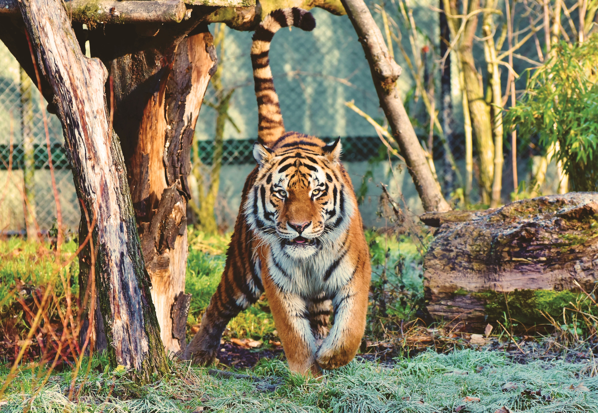

Parambikulam Tiger Reserve, which also includes the
erstwhile Parambikulam Wildlife Sanctuary, is a 643.66 square
kilometres (248.5 sq mi)[2] protected area lying in Palakkad
district and Thrissur district of Kerala state, South India.
The Wildlife Sanctuary, which had an area of 285 square
kilometres (110 sq mi) was established in part in 1973 and 1984.
It is in the Sungam range of hills between the Anaimalai Hills
and Nelliampathy Hills.[3][4][5] Parambikulam Wildlife Sanctuary
was declared as part of the Parambikulam Tiger Reserve on 19
February 2010.[6][7][8] Including the buffer zone, the tiger
reserve has a span of 643.66 km2. The Western Ghats,
Anamalai Sub-Cluster, including all of Parambikulam Wildlife
Sanctuary, has been declared by the UNESCO World Heritage
Committee as a World Heritage Site.
The Tiger Reserve is the home of four different tribes of
indigenous peoples including the Kadar, Malasar, Muduvar and Mala
Malasar settled in six colonies. Parambikulam Tiger Reserve
implements the Project Tiger scheme along with various other
programs of the Government of India and the Government of Kerala.
The operational aspects of administering a tiger reserve is as per
the scheme laid down by the National Tiger Conservation Authority.
People from tribal colonies inside the reserve are engaged as
guides for treks and safaris, and are provided employment through
various eco-tourism initiatives.
Parambikulam Tiger Reserve is among the top-ten best managed
Tiger Reserve in India.[12] The tiger reserve hosts many capacity
building training programmes conducted by Parambikulam
Tiger Conservation Foundation in association with various
organisations.
The sanctuary is located between Longitude:76° 35'- 76° 50' E,
and Latitude:10° 20’ – 10° 26’ N. It is 135 kilometres (84 mi)
from Palakkad town and adjacent to the Annamalai Wildlife
Sanctuary to the east in Tamil Nadu. It is bordered to the
north by Nemmara Forest Division, to the south by Vazhachal
Forest Division and the west by Chalakudy Forest Division.
The sanctuary has a hornblende, biotite, gneiss and charnockite
geology.
Altitude ranges between 300 m and 1438 m. There is a 600 m
elevation opening through the Nelliampathy hills from Anamalai
hills on the northern boundary of the sanctuary at Thoothampara.
Major peaks in the sanctuary are Karimala Gopuram (1438 m) in the
southern boundary of the sanctuary, Pandaravarai (1290 m) in the
north, Kuchimudi, Vengoli Malai (1120 m) in the eastern boundary
and Puliyarapadam (1010 m) in the west.
The sanctuary has three man-made reservoirs; Parambikulam, Thunacadavu
(Thunakkadavu) and Peruvaripallam, with a combined area of 20.66
km2. The Thuvaiar water falls empty into one of the reservoirs.
There are 7 major valleys and 3 major rivers, the Parambikulam,
the Sholayar and the Thekkedy. The Karappara river and Kuriarkutty
river also drain the area.